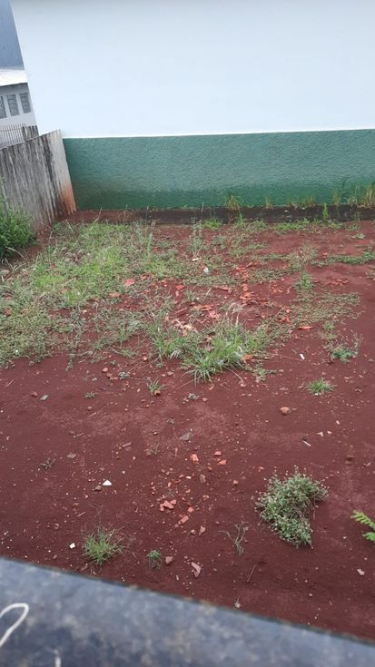
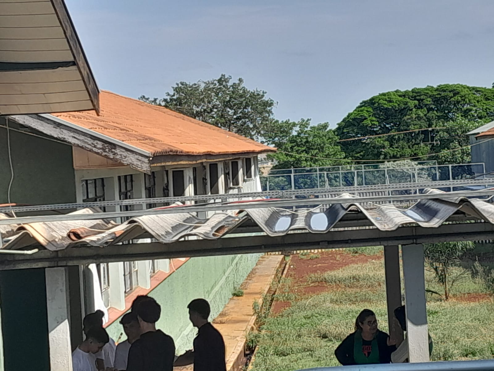
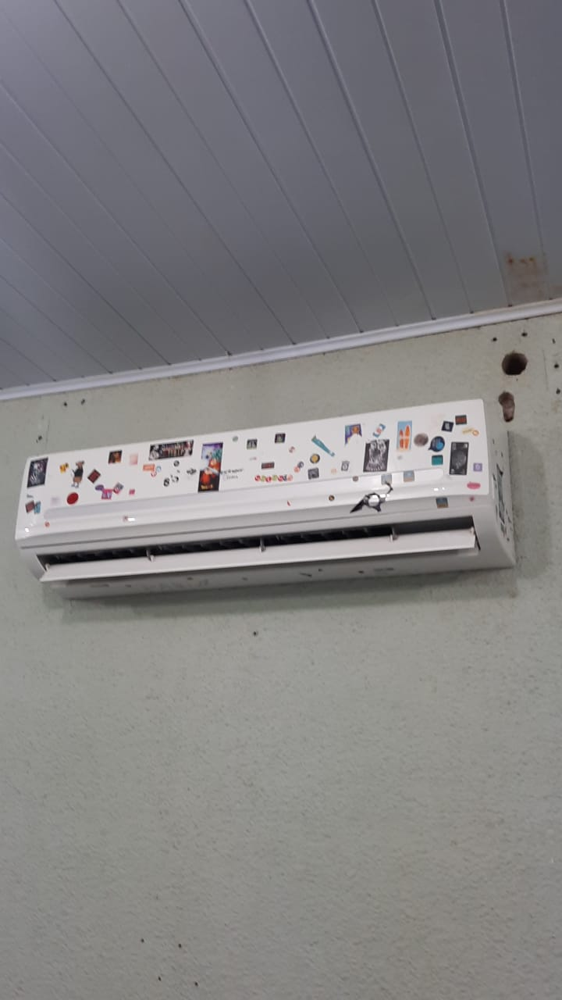
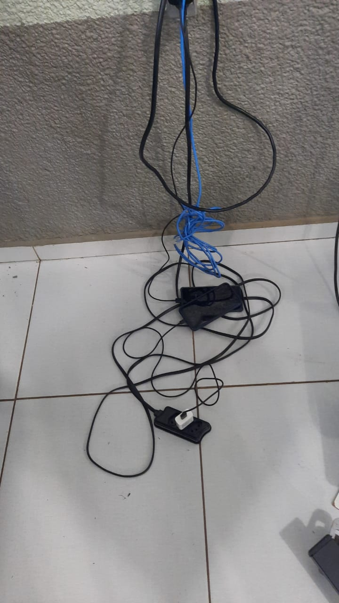
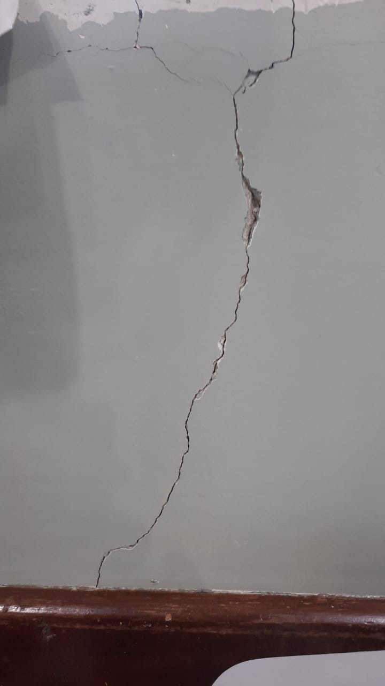
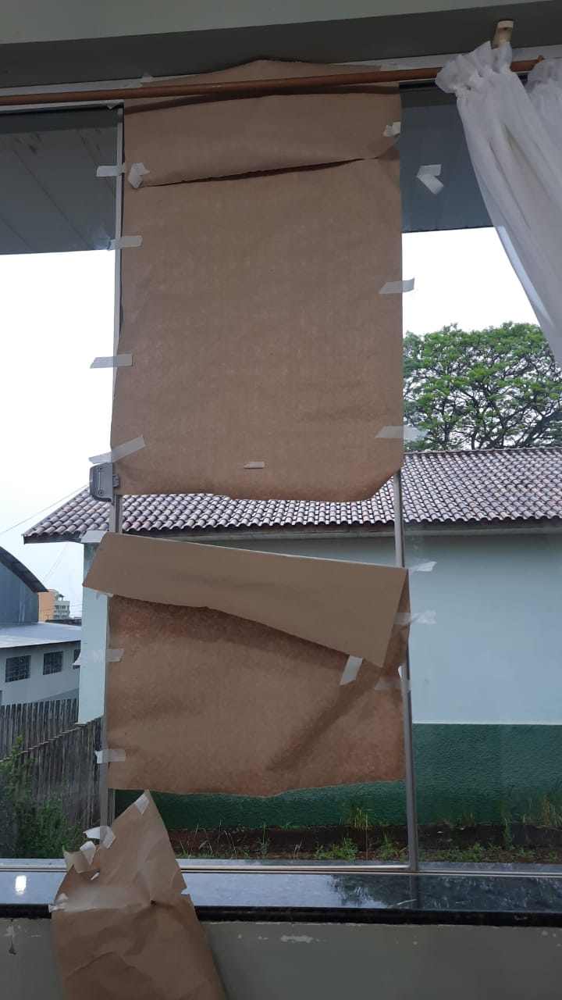
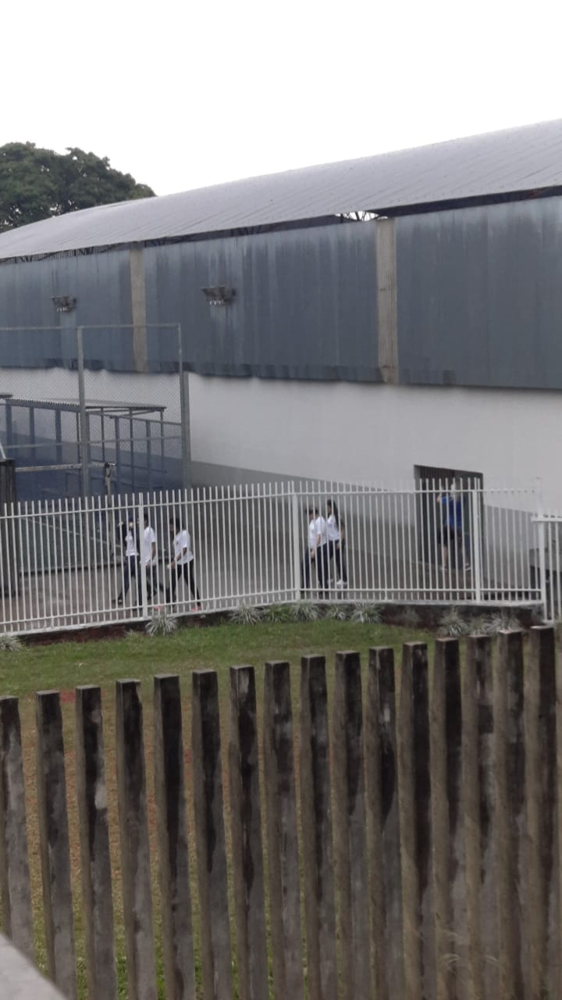
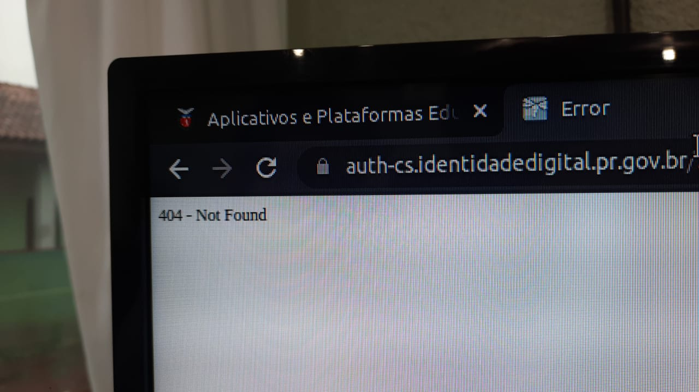

Sobre a Escola
O C.E.C.M. Marechal Rondon é um colégio público da rede estadual que fica em Campo Mourão, no Paraná.
O colégio já possui cerca de 1735 alunos, 83 professores, 28 agentes educacionais, e uma equipe pedagógica.
Iremos mostrar algumas fotos sobre o ambiente em si.

Jardim Botânico natural e cheio de flores.


Apenas gelar a sala é muito sem graça, por isso o ar condicionado serve de depósito para figurinhas de cadernos, desde figurinhas de formas geométricas, até de super heróis.
Softwares de última geração sempre atualizados, para proporcionar o melhor ensino para os alunos.

Um local super organizado e designado com o intuíto de carrgear os aparelhos telefônicos, fones de ouvido e etc...

Estrutura super reforçada para garantir a maior segurança possível para os alunos cujo pagam impostos para isso.

A Janela quebrou? Não há problema, a esvola resolve! É só colocar um papel pardo no local de uma janela, que fará a mesma função de uma janela de bidro, realmente não há vento ou tempestade alguma que passe por essa barreira.

Está pensando em sair suado após alguns exercícios na quadra em dias chuvosos? A escola incentiva os alunos a receberem chuva em seus corpos, para ganharem imunidade, que coisa boa não é mesmo?

Não podemos esquecer das plataformas do governo, cujo tem sua funcionalidade e desempenho 100% o tempo inteiro.